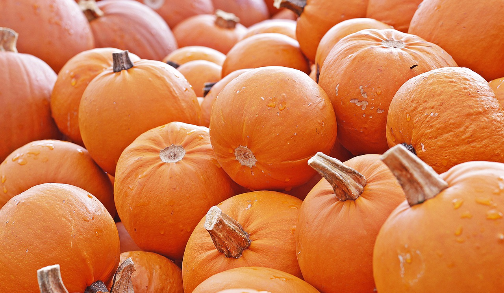

Mes réalisations


Beetroot water spinach okra water chestnut ricebean pea catsear courgette summer purslane. Water spinach arugula pea tatsoi aubergine spring onion bush tomato kale radicchio turnip chicory salsify pea sprouts fava bean. Dandelion zucchini burdock yarrow chickpea dandelion sorrel courgette turnip greens tigernut soybean radish artichoke wattle seed endive groundnut broccoli arugula.
Pea horseradish azuki bean lettuce avocado asparagus okra. Kohlrabi radish okra azuki bean corn fava bean mustard tigernut jícama green bean celtuce collard greens avocado quandong fennel gumbo black-eyed pea. Grape silver beet watercress potato tigernut corn groundnut. Chickweed okra pea winter purslane coriander yarrow sweet pepper radish garlic brussels sprout groundnut summer purslane earthnut pea tomato spring onion azuki bean gourd. Gumbo kakadu plum komatsuna black-eyed pea green bean zucchini gourd winter purslane silver beet rock melon radish asparagus spinach.